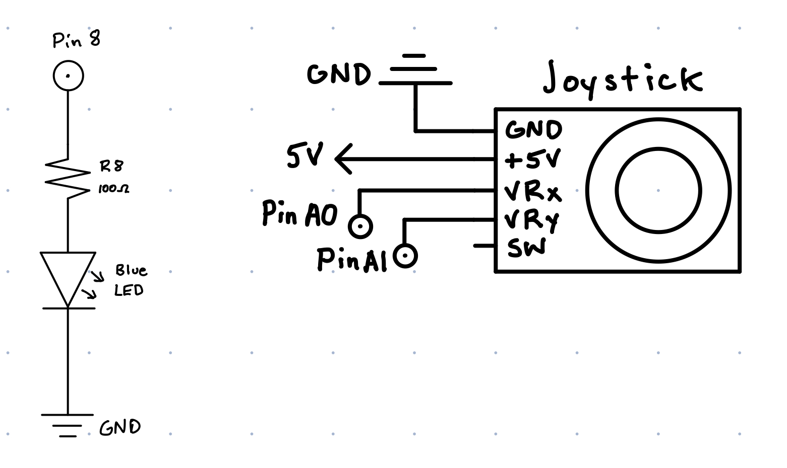

Michael Wentworth's Assignment 6!

Circuit for Assignment 6

Above circuit in action. The joystick's position draws a line on the webpage, similar to an Etch A Sketch. Pressing the space bar clears the previously drawn lines and makes the blue LED blink 3 times.

Schematic for the above circuit. Schematic on the left is for the blue LED, with a 100 ohms resistor, attached to pin 8. Schematic on the right is for the joystick controls for the webpage. The x value is attached to pin A0, and y value is attached to pin A1.
const int x = A0; // joystick x pin
const int y = A1; // joystick y pin
int xval = 0; // initalizes xval to 0
int yval = 0; // initalizes yval to 0
void setup() {
Serial.begin(9600); // begins serial communication
Serial.setTimeout(10); // sets timeout for parseInt
pinMode(8, OUTPUT); // sets pin 8 to output
}
void loop() {
xval = analogRead(x); // reads xval from joystick
if (xval == 502 || xval == 501) { // calibration to keep joystick centered
xval = 512; // calibration to keep joystick centered
}
yval = analogRead(y);
if (yval == 511 || yval == 512) { // calibration to keep joystick centered
yval = 512; // calibration to keep joystick centered
}
Serial.print("["); // creates array on serial
Serial.print(yval); // creates array on serial
Serial.print(","); // creates array on serial
Serial.print(xval); // creates array on serial
Serial.println("]"); // creates array on serial
if (Serial.available() > 0) { // if there's serial data
int inByte = Serial.read(); // read it
Serial.write(inByte); // send it back out as raw binary data
for (int i = 0; i < 3; i++) { // repeats loop 3 times
digitalWrite(8, HIGH); // sets pin 8 to high
delay(50); // waits
digitalWrite(8, LOW); // sets pin 8 to low
delay(50); // waits
}
}
delay(50); // waits
}
Code for the Arduino Circuit. X and Y position of the joystick is sent through an array to the p5 page. Calibration of the joystick is used to make sure that the joystick reads a constant value when it is at rest. Arduino also takes input from the p5 page, specifically if the spacebar is pressed. When pressed, pin 8 is set to high and then low three times, causing the blue LED to blink.
var serial; // variable to hold an instance of the serialport library
var portName = '/dev/tty.usbmodem14201' //rename to the name of your port
var dataarray = []; //some data coming in over serial!
var xOld = 600; // start position for the line
var yOld = 375; // start position for the line
function setup() {
serial = new p5.SerialPort(); // make a new instance of the serialport library
serial.on('list', printList); // set a callback function for the serialport list event
serial.on('connected', serverConnected); // callback for connecting to the server
serial.on('open', portOpen); // callback for the port opening
serial.on('data', serialEvent); // callback for when new data arrives
serial.on('error', serialError); // callback for errors
serial.on('close', portClose); // callback for the port closing
serial.list(); // list the serial ports
serial.open(portName); // open a serial port
createCanvas(1200, 750); // creates canvas 1200 x 750
background(51); // sets background color to gray
}
// get the list of ports:
function printList(portList) {
// portList is an array of serial port names
for (var i = 0; i < portList.length; i++) {
// Display the list the console:
print(i + " " + portList[i]);
}
}
function serverConnected() {
print('connected to server.');
}
function portOpen() {
print('the serial port opened.')
}
function serialError(err) {
print('Something went wrong with the serial port. ' + err);
}
function portClose() {
print('The serial port closed.');
}
function serialEvent() {
if (serial.available()) {
var datastring = serial.readLine(); // readin some serial
var newarray;
try {
newarray = JSON.parse(datastring); // can we parse the serial
} catch(err) {
//console.log(err);
}
if (typeof(newarray) == 'object') { // if newarray is object
dataarray = newarray; // sets dataarray to the incoming array
}
console.log("got back " + datastring); // logs to console
}
}
function keyPressed() { // if a key is pressed
if (keyCode === 32) { // if key is space bar
clear(); // clear canvas
background(51); // reset background color
serial.write(key); // write key to arduino
}
}
function draw() {
xPos = map(dataarray[0], 0, 1023, 0, 1200); // maps x position from joystick to canvas size
yPos = map(dataarray[1], 0, 1023, 750, 0); // maps y position form joystick to canvas size
line(xOld, yOld, xPos, yPos) // draws line from old position to new position
xOld = xPos; // updates old position
yOld = yPos; // updates old position
}
Code for the p5 page. a 1200x750 canvas is created with a gray color. A line is drawn starting at the center, to wherever the joystick is located. Then, another line is drawn from the previous joystick position to the new position and so on until the spacebar is pressed. When it is pressed, the canvas is cleared, but the previous position of the joystick is not, creating an effect similar to an Etch A Sketch. When the spacebar is pressed, serial data is sent to Arduino, causing the LED to blink.